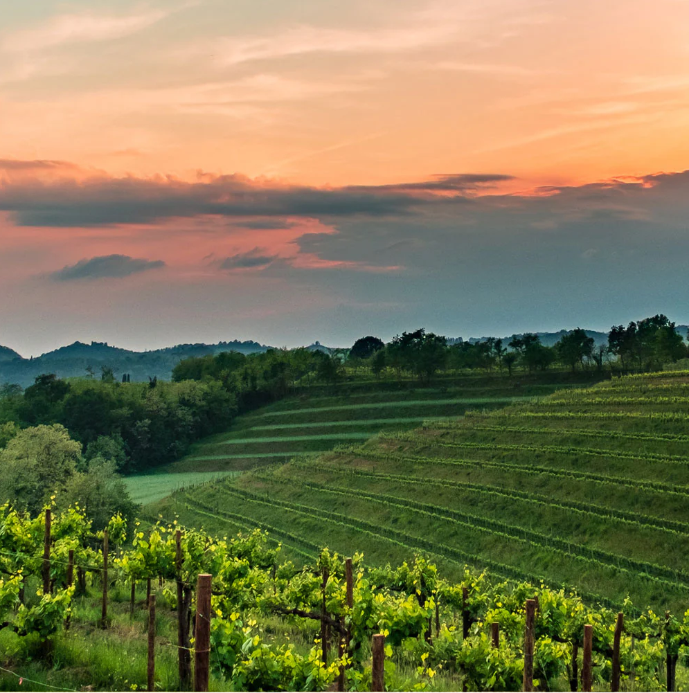

Following hand harvesting, the grapes were whole cluster pressed to ensure delicacy in this wine. The juice was cold settled and racked, before fermentation by native yeast ensued. Fermentation temperatures were maintained below 72ºF, and persisted for 14 days before completion to dryness.
Mario Zanusso produces charismatic wines that capture the sunny slopes of Friuli. Mario’s winemaking philosophy is that the maximum expression of his wines lies in purity: all you can find is only what the grapes have given them. For this reason, the entire process in the cellar must be carried out with absolute accuracy. Simplicity is never a starting point, but rather the point of arrival: it is a research which, from pruning to bottling, feeds on cleanliness, precision and definition. He has chosen steel tanks and vats made of cement - ancient, material and therefore fascinating - which guarantees a lightness to the wines he produces and is the aim of his compelling obsession.
Our Pinot Grigio vineyards are on calcareous-clayey soils in the best wine-growing areas of the Friuli plain, already mapped at the time of Queen Maria Theresa of Austria through the classification of the Crus of the County of Gorizia-Gradisca (1787).
We believe the best wine pairings are those you enjoy most! But, if you did want to explore some canned white wine pairings, we recommend trying Archer Roose Pinot Grigio as a refreshingly tart complement to light, summery foods.
* Sushi and seafood
* Salads, crudités or vegetable antipasto
* Light pasta dishes
* Chicken
* Herbaceous sauces or vinaigrettes
Chef Adam Moore has created a mouth-watering dish inspired by Friuli, renowned for its garlic, among other tasty foodie finds. These Cheesy Pancetta Garlic Bread Pull-Apart Rolls are soft and fluffy, stuffed full of pancetta, pesto, roasted red peppers and melted mozzarella cheese. Hot out of the oven, the bread is drizzled with a lemon-garlic and Archer Roose Pinot Grigio butter.